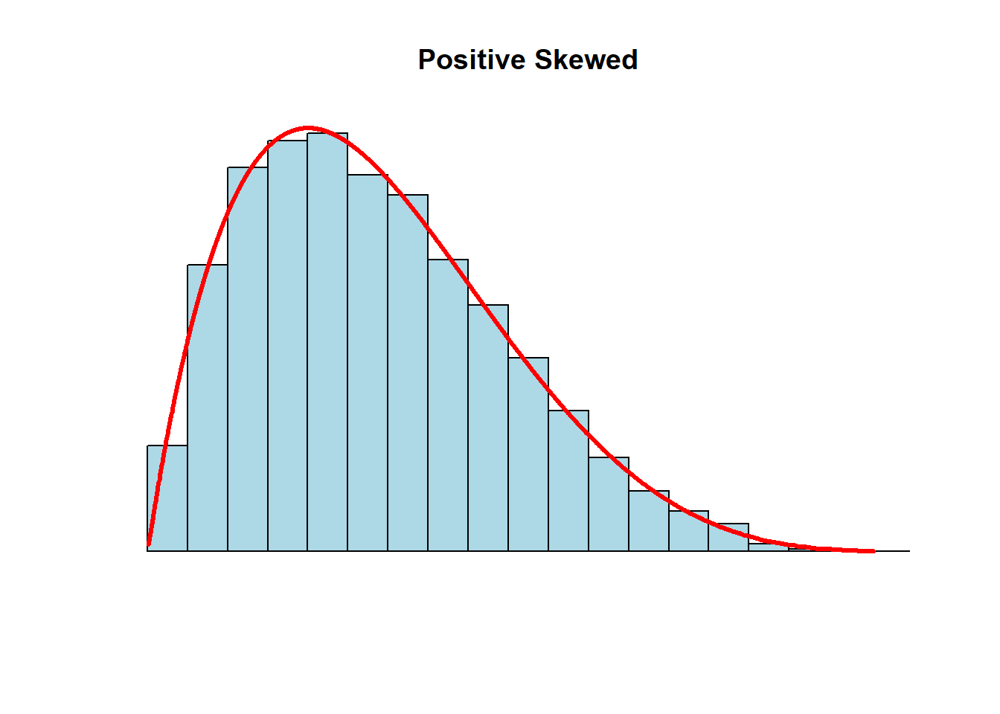

1.3 Descriptive Measures
This section summarizes the measures we use to describe data samples.
Central Tendency: the central value of a data set
Variation: the dispersion (scattering) around a central value
Shape: the distribution pattern of the data values
These measures will be used repeatedly in our analyses, and will affect how confident we are in our conclusions.
To introduce you to some numerical results in R, we will continue with our light bulb scenario and add some actual data. Suppose we sampled 60 light bulbs from our population, turned them on, and timed each one until it burned out. If we recorded the lifetime of each light bulb, then we have a dataset (or data sample) of 60 observations on the lifetimes of light bulbs. This is what we will be using below.
1.3.1 Central Tendency
The Arithmetic or sample mean is the average value of a variable within the sample.
\[\bar{X}=\frac{\text{Sum of values}}{\text{Number of observations}}=\frac{1}{n} \sum\limits_{i=1}^n X_i\]
# the mean of our light bulb sample:
# First we load the data set and this will give us 60 observations of the lifespan of each of our 60 light bulbs in the sample. The variable is called "Lifetime" - which can be observed by using the "list" command.
load("data/Lightbulb.Rdata")
list(Lifetime)## [[1]]
## [1] 858.9164 797.2652 1013.5366 1064.8195 874.2275 825.1137 897.0879 924.0998 870.0674 966.2095
## [11] 955.1281 977.2073 888.1690 826.6483 776.7479 877.5691 998.7101 892.8178 886.0261 831.7615
## [21] 1082.9650 1034.9549 784.5026 919.2082 1049.1824 923.5767 907.7295 890.3758 856.4240 808.8035
## [31] 1009.7146 890.3709 930.9597 809.9274 919.9381 793.7455 919.9824 948.8593 810.6887 846.9573
## [41] 955.3873 833.2762 892.4969 973.1861 913.7650 928.6057 940.7637 964.4341 914.2733 880.3329
## [51] 831.5395 967.2442 1030.7598 857.5421 889.3689 1094.1440 927.7684 730.9976 918.8359 867.5931(mean(Lifetime))## [1] 907.5552The average lifetime of our 60 \((n=60)\) observed light bulbs is 908 hours.
The median is the middle value of an ordered data set.
If there is an odd number of values in a data set, the median is the middle value
If there an even number, median is the average of the two middle values
# the median of our light bulb sample:
(median(Lifetime))## [1] 902.4087The median lifetime of our 60 observed light bulbs is 902 hours.
The mode is the most frequently appearing value in a set of observations. The mode might not exist if there is a set of unique, non-repeating observations.
# There isn't a built in function for the mode in R... but we can create one.
Mode <- function(x) {
ux <- unique(x)
ux[which.max(tabulate(match(x, ux)))]
}
(Mode(Lifetime))## [1] 858.9164The most commonly observed lifetime of our 60 observed light bulbs is 859 hours. Note that this doesn’t say anything really about how many times this value has been observed, just that it has been observed more than any other value. We will not be using this measure as much as the previous two.
Percentiles break the ordered values of a sample into proportions.
Quartiles split the data into 4 equal parts
Deciles split the data into 10 equal parts
In general, the pth percentile is given by: \((p * 100)^{th}=p(n+1)\)
A percentile delivers an observed value such that a determined proportion of observations are less than or equal to that value. You can choose any percentile value you wish. For example, the code below calculates the 4th, 40th, and 80th percentiles of our light bulb sample.
# You can generate any percentile (e.g. the 4th, 40th, and 80th) using the quantile function:
(quantile(Lifetime,c(0.04, 0.40, 0.80)))## 4% 40% 80%
## 787.8301 888.8889 966.4164This result states that 4% of our observations are less that 788 hours, 40% of our observations are less than 889 hours, and 80% of our observations are less than 966 hours. Note that the median (being the middle-ranked observation) is by default the 50th percentile.
(quantile(Lifetime,0.50))## 50%
## 902.4087The main items of central tendency can be laid out in a Five-Number Summary:
- Minimum
- First Quartile (25th percentile)
- Second Quartile (median)
- Third Quartile (75th percentile)
- Maximum
summary(Lifetime)## Min. 1st Qu. Median Mean 3rd Qu. Max.
## 731.0 857.3 902.4 907.6 955.2 1094.11.3.2 Variation
The sample variance measures the average (squared) amount of dispersion each individual observation has around the sample mean. This is a very important measure in statistics, so take some time to understand exactly what this equation is calculating. In particular, \(X\) is a variable and \(X_i\) is an arbitrary single observation from that group of data. Once the mean \((\bar{X})\) is calculated, \(X_i - \bar{X}\) is the difference between a single observation of X and the overall mean of X. Sometimes this difference is negative \((X_i < \bar{X})\) and sometimes this difference is positive \(X_i > \bar{X}\) - which is why we need to square these differences before adding them all up. Nonetheless, once we obtain the average value of these differences, we get a sense of the amount of dispersion these individual observations are scattered around the sample average. If this value was zero, then every observation of \(X\) is equal to \(\bar{X}\). The greater the value is from zero, the greater the average dispersion of individual values around the mean.
\[S^2=\frac{1}{n-1}\sum\limits_{i=1}^n(X_i-\bar{X})^2\]
The sample standard deviation is the square-root of the sample variance and measures the average amount of dispersion in the same units as the mean. This essentially is done to back-out the fact that we had to square the differences of \(X_i - \bar{X}\), so the variance is technically denoted in squared units.
\[S=\sqrt{S^2}\]
(var(Lifetime))## [1] 6235.852(sd(Lifetime))## [1] 78.96741The variance of our sample of light bulb lifetimes is 6236 squared-hours. After taking the square root of this number, we can conclude that the standard deviation of our sample is 79 hours. Is this standard deviation big or small? The answer to this comes when we get to statistical inference.
Discussion
The term \((X_i-\bar{X})\) is squared because individual observations are either above or below the mean by design. If you don’t square the terms (making the negative numbers positive) then they will sum to zero by design.
The term \((n-1)\) appears in the denominator because this is a sample variance and not a population variance. In a population variance equation, \((n-1)\) gets replaced with \(n\) because we know the population mean. Since we had to estimate the population mean (i.e., used the sample mean), we had to deduct one degree of freedom. We will talk more about degrees of freedom later, but the rule of thumb is that we deduct a degree of freedom every time we build a sample statistic (like sample variance) using another sample statistic (like sample mean).
The coefficient of variation is a relative measure which denotes the amount of scatter in the data relative to the mean.
The coefficient of variation is useful when comparing data on variables measured in different units or scales (because the CV reduces everything to percentages).
\[CV=\frac{S}{\bar{X}}*100\%\]
Take for example the Gross Domestic Product (i.e., output) for the states of California and Delaware.
library(readxl)
CARGSP <- read_excel("data/CARGSP.xls")
DENGSP <- read_excel("data/DENGSP.xls")
CGDP <- CARGSP$CGDP
DGDP <- DENGSP$DGDP
(mean(CGDP))## [1] 2094764(sd(CGDP))## [1] 397103.9(mean(DGDP))## [1] 56996.58(sd(DGDP))## [1] 12395.78A quick analysis of the real annual output observations from these two states between the years 1997 and 2020 suggest that the average annual output of California is 2,094,764 million dollars (with a standard deviation of 397,104 million) and that of Delaware is 56,997 million dollars (with a standard deviation of 12,396 million). These two states have lots of differences between them, and it is difficult to tell which state has more volatility in their output.
If we construct coefficients of variation:
(sd(CGDP)/mean(CGDP))*100## [1] 18.95698(sd(DGDP)/mean(DGDP))*100## [1] 21.74828We can now conclude that Delaware’s standard deviation of output is almost 22% that of its’ average output, while California’s standard deviation is 19%. This would suggest that Delaware has the more volatile output, relatively speaking.
1.3.3 Measures of shape
Comparing the mean and median of a sample will inform us of the skewness of the distribution.
- mean = median: a symmetric or zero-skewed distribution.

- mean > median: a positive-skewed or right-skewed distribution
- the right-tail is pulled in the positive direction

- mean < median: a negative-skewed or a left-skewed distribution
- the left-tail is pulled in the negative direction
The degree of skewness is indicative of outliers (extreme high or low values) which change the shape of a distribution.
1.3.4 Covariance and Correlation
While we won’t be examining relationships between different variables until later on in the course, we can easily calculate and visualize these relationships.
The covariance measures the strength of the relationship between two variables. This measure is similar to a variance, but it can be either positive or negative depending on how the two variables move in relation to each other.
\[cov(X,Y)=\frac{1}{n-1}\sum\limits_{i=1}^n(X_i-\bar{X})(Y_i-\bar{Y})\]
The coefficient of correlation transforms the covariance into a relative measure
\[corr(X,Y)=\frac{cov(X,Y)}{S_{X}S_{Y}}\] The correlation transformed the covariance relationship into a measure between -1 and 1
\(corr(X,Y)=0\): There is no relationship between \(X\) and \(Y\)
\(corr(X,Y)>0\): There is a positive relationship between \(X\) and \(Y\) - meaning that the two variables tend to move in the same direction
\(corr(X,Y)<0\): There is a negative relationship between \(X\) and \(Y\) - meaning that the two variables tend to move in the opposite direction
Extended Example:
This chapter concludes with a summary of all of the descriptive measures we discussed. Consider a dataset that is internal to R (called mtcars) that contains characteristics of 32 different automobiles. We will focus on two variables: the average miles per gallon (mpg) and the weight of the car (in thousands of pounds).
car <- mtcars # This loads the dataset and calls it car
# Lets examine mpg first:
summary(car$mpg)## Min. 1st Qu. Median Mean 3rd Qu. Max.
## 10.40 15.43 19.20 20.09 22.80 33.90hist(car$mpg,20,col = "yellow")# Variance:
(var(car$mpg))## [1] 36.3241# Standard deviation:
(sd(car$mpg))## [1] 6.026948The above analysis indicates the following:
The sample average MPG in the sample is 20.09, while the median in 19.20. This indicates that there is a slight positive skew to the distribution of observations.
The lowest MPG is 10.4 while the highest is 33.90.
The first quartile is 15.43 while the third is 22.80. This delivers the inter-quartile range (the middle 50% of the distribution)
The standard deviation is 6.03 which delivers a 30 percent coefficient of correlation.
## Lets now examine weight:
summary(car$wt)## Min. 1st Qu. Median Mean 3rd Qu. Max.
## 1.513 2.581 3.325 3.217 3.610 5.424hist(car$wt,20,col = "pink")# Variance:
(var(car$wt))## [1] 0.957379# Standard deviation:
(sd(car$wt))## [1] 0.9784574The above analysis indicates the following:
The sample average weight in the sample is 3.22 thousand pounds, while the median in 3.33. This indicates that there is a slight negative skew to the distribution of observations.
The lowest weight is 1.51 while the highest is 5.42.
The first quartile is 2.58 while the third is 3.61.
The standard deviation is 0.99 which also delivers a 30 percent coefficient of correlation.
# We can now look at the relation between mpg and weight
(cov(car$mpg,car$wt))## [1] -5.116685(cor(car$mpg,car$wt))## [1] -0.8676594plot(car$mpg,car$wt,
xlab = "Miles per gallon",
ylab = "Weight of car",
main = "A Scatter plot",
col = "cyan")The negative correlation as well as the obviously negative relationship in the scatter-plot between the weight of a car and its miles per gallon should make intuitive sense - heavy cars are less efficient.
The Punchline
Suppose we want to learn about a relationship between a car’s weight and its fuel efficiency. Our sample is 32 automobiles, but our population is EVERY automobile (EVER). We would like to say something about the population mean Weight and MPG.
How does the sample variance(s) give us confidence on making statements about the population mean when we’re only given the sample? That’s where inferential statistics comes in. Before we get into that, we will dig into elements of collecting data (upon which our descriptive statistics are based on) and using R (with which we will use to calculate our descriptive statistics using our collected data).